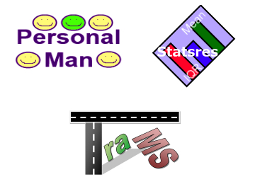

In March 2010, I was awarded my Doctor of Philosophy degree after a successful defence of my doctoral thesis entitled “Hybrid Algorithms for Distributed Constraint Satisfaction”. I have many years of practical software development, architecture and modelling in addition to my degrees. I have also developed a number of freely available software programmes as well as web sites for various organisations.
I also hold a First Class Honours Bachelor of Science degree from the Robert Gordon University. During my studies, I received a number of awards.
I am currently working as Software Architect with myToys.de GmbH in Berlin, Germany.
I have over 10 years experience as a Software Developer and Software Architect. You can read the most important facts in my portfolio!
I have developed a number of software applications over the last few years in a number of languages. Visit the Software page to download my software.
I have worked in a number of research projects. You can find out more by visiting the Research page and/or by downloading some of my publications.